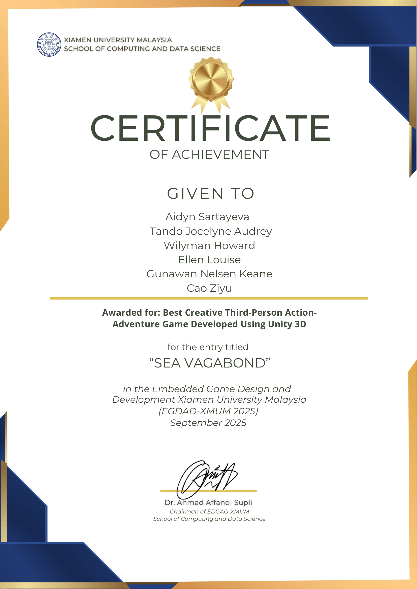

Sea Vagabond: 3D Pirate Adventure
An ambitious team-built 3D pirate action-adventure game in Unity. Guide the young pirate captain across archipelago realms, complete tutorial quests on Havenport Isle, interact with voiced characters, and recover the mystical stones to unlock legendary secrets.
Havenport Isle & Quests
As lead designer for Area 1 (Havenport Isle), I created the starting hub where players anchor their ship, explore the harbor tavern, and meet the island tavern keeper.
- 🏝️ Island Environment Art: Pier docks, tropical foliage, atmospheric ocean lighting.
- 💬 Branching Dialogues: Writing NPC conversations and tutorial quest interactions.
- 🎬 Cinematic Cutscenes: Directing camera choreography and character staging.
Core Game Mechanics
Control the pirate vessel with realistic wave buoyancy and steering physics.
Seamless transition from ship deck to dock, coastal caves, and cliff paths.
Locate hidden altars across 5 realms to piece together the legendary stone puzzle.

Best Game Project Award
Recognized by faculty and peers for outstanding environmental worldbuilding, fluid character controls, cohesive visual storytelling, and atmospheric pirate cinematics.